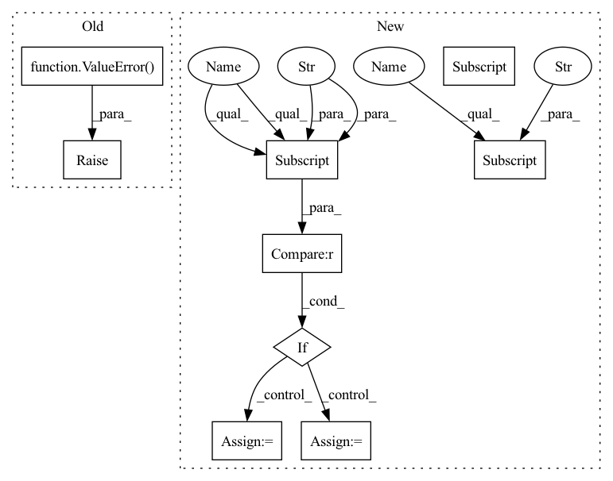

Pattern ID :1858
Before Change
elif self.custom_config["model_arch_args"]["core_arch"] == "lstm":
self.rnn = nn.LSTM(input_dim, self.hidden_state_size, batch_first=True)
else:
raise ValueError()
// action branch and value branch
self.action_branch = nn.Linear(self.hidden_state_size, num_outputs)
self.value_branch = nn.Linear(self.input_dim, 1)After Change
self.full_obs_space = getattr(obs_space, "original_space", obs_space)
self.n_agents = self.custom_config["num_agents"]
if "encode_layer" in self.custom_config["model_arch_args"]:
encode_layer = self.custom_config["model_arch_args"] ["encode_layer"]
encoder_layer_dim = encode_layer.split("-")
encoder_layer_dim = [int(i) for i in encoder_layer_dim]
else: // default config
encoder_layer_dim = []
for i in range(self.custom_config["model_arch_args"]["fc_layer"]):
out_dim = self.custom_config["model_arch_args"]["out_dim_fc_{}".format(i)]
encoder_layer_dim.append(out_dim)In pattern: SUPERPATTERN
Frequency: 3
Non-data size: 9
Instances Fragment ID: 4606725
Project Name: replicable-marl/marllib
Commit Name: 229bfd1c9db33d2ff0761dbdbe21e47a47a9b87c
Time: 2023-02-23
Author: hhhusiyi@163.com
File Name: marllib/marl/models/zoo/rnn/base_rnn.py
M Class Name: Base_RNN
N Class Name: Base_RNN
M Method Name: __init__(6)
N Method Name: __init__(6)
M Parent Class: TorchRNN,nn.Module
N Parent Class: TorchRNN,nn.Module
M File Name: marllib/marl/models/zoo/rnn/base_rnn.py
N File Name: marllib/marl/models/zoo/rnn/base_rnn.py
M Start Line: 39
M End Line: 86
N Start Line: 34
N End Line: 105
Before Change
type="CrossEntropyLoss", use_mask=True, loss_weight=1.0)):
super(FCNMaskHead, self).__init__()
if upsample_method not in [None, "deconv", "nearest", "bilinear"]:
raise ValueError(
"Invalid upsample method {}, accepted methods "
"are "deconv", "nearest", "bilinear"".format(upsample_method))
self.num_convs = num_convs
// WARN: roi_feat_size is reserved and not used
self.roi_feat_size = _pair(roi_feat_size)
self.in_channels = in_channelsAfter Change
loss_mask=dict(
type="CrossEntropyLoss", use_mask=True, loss_weight=1.0)):
super(FCNMaskHead, self).__init__()
self.upsample_cfg = upsample_cfg.copy()
if self.upsample_cfg["type"] not in [
None, "deconv", "nearest", "bilinear", "carafe"
]:
raise ValueError(
"Invalid upsample method {}, accepted methods "
"are "deconv", "nearest", "bilinear", "carafe"".format(
self.upsample_cfg["type"] ))
self.num_convs = num_convs
// WARN: roi_feat_size is reserved and not used
self.roi_feat_size = _pair(roi_feat_size)
self.in_channels = in_channels
self.conv_kernel_size = conv_kernel_size
self.conv_out_channels = conv_out_channels
self.upsample_method = self.upsample_cfg.get("type")
self.scale_factor = self.upsample_cfg.pop("scale_factor")
self.num_classes = num_classes
self.class_agnostic = class_agnostic
self.conv_cfg = conv_cfg
self.norm_cfg = norm_cfg
self.fp16_enabled = False
self.loss_mask = build_loss(loss_mask)
self.convs = nn.ModuleList()
for i in range(self.num_convs):
in_channels = (
self.in_channels if i == 0 else self.conv_out_channels)
padding = (self.conv_kernel_size - 1) // 2
self.convs.append(
ConvModule(
in_channels,
self.conv_out_channels,
self.conv_kernel_size,
padding=padding,
conv_cfg=conv_cfg,
norm_cfg=norm_cfg))
upsample_in_channels = (
self.conv_out_channels if self.num_convs > 0 else in_channels)
upsample_cfg_ = self.upsample_cfg.copy()
if self.upsample_method is None:
self.upsample = None
elif self.upsample_method == "deconv": Fragment ID: 4606676
Project Name: saic-vul/iterdet
Commit Name: b5431092505f7dcd7de616c8a79eba4d2532fbc8
Time: 2020-02-21
Author: 1155098160@link.cuhk.edu.hk
File Name: mmdet/models/mask_heads/fcn_mask_head.py
M Class Name: FCNMaskHead
N Class Name: FCNMaskHead
M Method Name: __init__(12)
N Method Name: __init__(13)
M Parent Class: nn.Module
N Parent Class: nn.Module
M File Name: mmdet/models/mask_heads/fcn_mask_head.py
N File Name: mmdet/models/mask_heads/fcn_mask_head.py
M Start Line: 23
M End Line: 76
N Start Line: 26
N End Line: 90
Before Change
elif self.custom_config["model_arch_args"]["core_arch"] == "lstm":
self.rnn = nn.LSTM(input_dim, self.hidden_state_size, batch_first=True)
else:
raise ValueError()
// action branch and value branch
self.action_branch = nn.Linear(self.hidden_state_size, num_outputs)
self.value_branch = nn.Linear(self.input_dim, 1)After Change
name)
// judge the model arch
self.custom_config = model_config["custom_model_config"]
self.full_obs_space = getattr(obs_space, "original_space", obs_space)
self.n_agents = self.custom_config["num_agents"]
if "encode_layer" in self.custom_config["model_arch_args"]:
encode_layer = self.custom_config["model_arch_args"]["encode_layer"]
encoder_layer_dim = encode_layer.split("-")
encoder_layer_dim = [int(i) for i in encoder_layer_dim]
else: // default config
encoder_layer_dim = []
for i in range(self.custom_config["model_arch_args"]["fc_layer"]):
out_dim = self.custom_config["model_arch_args"]["out_dim_fc_{}".format(i)]
encoder_layer_dim.append(out_dim) Fragment ID: 4606661
Project Name: replicable-marl/marllib
Commit Name: 229bfd1c9db33d2ff0761dbdbe21e47a47a9b87c
Time: 2023-02-23
Author: hhhusiyi@163.com
File Name: marllib/marl/models/zoo/rnn/base_rnn.py
M Class Name: Base_RNN
N Class Name: Base_RNN
M Method Name: __init__(6)
N Method Name: __init__(6)
M Parent Class: TorchRNN,nn.Module
N Parent Class: TorchRNN,nn.Module
M File Name: marllib/marl/models/zoo/rnn/base_rnn.py
N File Name: marllib/marl/models/zoo/rnn/base_rnn.py
M Start Line: 39
M End Line: 86
N Start Line: 34
N End Line: 105